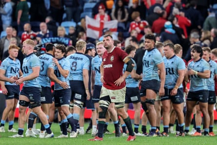
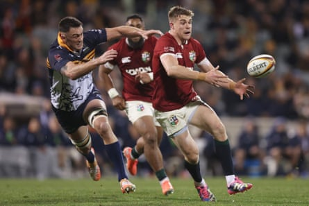

V an der Flier, Curry, Morgan or Pollock?
The Lions have barely had a second for reflection lately. Is it Thursday in Canberra or Friday in Adelaide? Either way, there is another game just around the corner. With scant time for proper training, the management have been relying on players sticking their hands up on matchdays but no one, as yet, has nailed down the No 7 jersey.
This matters because the Wallabies will be strong at the breakdown and possess an array of jackal threats.
If Toulouse’s Jack Willis were here the conversation might be different but there is probably one starting spot to be contested between Josh van der Flier, Jac Morgan, Tom Curry and Henry Pollock.
Curry had the chance to stake an unanswerable claim against the Brumbies but, in common with many others, had a tricky evening. The other three are all involved against the Australia-New Zealand Invitational XV this weekend and there remains much to play for.
The management clearly like the game-breaking ability that Pollock can offer and Morgan, despite not being the biggest of men, can be a real nuisance. Curry’s work-rate will be hard to overlook unless Andy Farrell, in his quest for cohesion, simply reverts to his trusted Irish lieutenants and starts Van der Flier.
C hessum or Beirne – or both?
They appreciate a Big Red in Australia, whether it be kangaroos or a decent shiraz. And the flame-haired Ollie Chessum is already making an impact down under. He has been as consistently good as almost any of the Lions forwards, to the point where it will now be a major surprise if he does not feature in the Test 23.
The question is what role he should fill. The back-row balance did not look entirely right against the Brumbies and there is only one tour game left in which to fiddle around with the blend. Tadhg Beirne has played a lot of rugby this season but is he still at his sharpest? Or could the Lions conceivably go for all-out mobility and start both Beirne and Chessum in the same starting XV for the first time on this tour?
Beirne, interestingly, is back in the second row this weekend but picking him there for the first Test would mean omitting big Joe cCarthy. If Beirne has a colossal game this weekend, though, it will give the whole debate a vigorous stir.
Tadhg Beirne (centre) surrounded by Waratahs players in Sydney after the Lions’ victoryPhotograph: David Gray/AFP/Getty Images
A ki, Tuipulotu or Farrell?
Before the tour this was widely seen as Sione Tuipulotu’s shirt to lose. But the Scotland captain has been injured and is still shaking off a touch of ring rust. Bundee Aki, on the other hand, offers a powerful simplicity at 12 that gives Finn Russell the option of using him as either a compelling decoy or a straight-up carrier. Teams may think they know what Aki is going to do but stopping him from five metres out remains easier said than done.
In theory that simplifies the equation for Tuipulotu against a physical-looking combined Au-NZ Invitational XV: crank things up or accept a Test place may have to be delayed. But what about Owen Farrell? Who would the Lions want coming off the bench in a pressure-laden Test match if, heaven forbid, Russell or even Aki were to go down early on? If Farrell Jr goes well in Adelaide, his ability to operate at both 10 and 12 makes him a genuine option for the matchday 23.
Garry Ringrose passes during the tour match against Western Force in Canberra.Photograph: Mark Metcalfe/Getty Images
R ingrose or Jones?
The selection at 12 has wider ramifications. If Aki starts, the temptation to pair him with his Ireland teammate Garry Ringrose clearly increases. Ringrose is a strong defender and may well be seen as the man to defuse the obvious threat of the Wallabies’ emerging star Joseph Aukuso Sua’ali’i . The Irishman is in form, too, having scored tries in Perth, Brisbane and Canberra already on this tour.
That may mean Huw Jones will have to be patient unless he rips it up in Adelaide and shows he can offer another dimension to the Lions’ attacking effectiveness in the wider channels. Again it also boils down to the collective blend: if the Lions back three is also going to be predominantly Irish it makes Ringrose the safer, more logical pick.
K eenan or Hansen?
The moment Blair Kinghorn whacked the pitch with his hand in frustration after being injured against the Brumbies it felt ominous for the Lions. Sure enough Ireland’s versatile Jamie Osborne has been summoned as cover and Farrell will have to find another full-back for next week’s first Test. The situation is complicated by the fact Hugo Keenan has played only once on tour prior to this weekend because of illness. He is also a different kind of player to Kinghorn and a less obvious bench option.
So what does Farrell do? Stick with the devil he knows or roll the dice? One option could be to shift his favourite player Mack Hansen to full-back. That would permit him to start both Hansen and Tommy Freeman in Brisbane, with James Lowe’s raking left boot also in the back-three mix. Marcus Smith might disagree but, right now, it would be a huge call to select the Harlequin as a starting Lions Test 15.